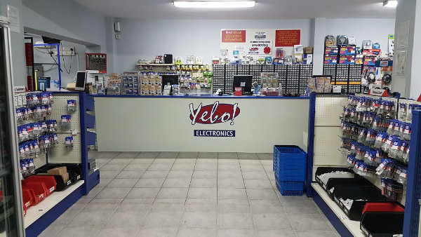
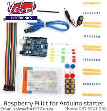
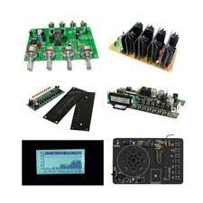

YEBO ELECTRONICS
Yebo Electronics was originally formed in South Africa back in 1992, trading under the name of Maplin South Africa (Pty) Ltd.
Originally, the company was created to operate as a subsidiary of the UK electronics company, Maplin Electronics. Our original offices were established in Somerset West and the business operated as a mail order company, only. Expansion of the company over the next few years saw the business move premises within the Somerset West area a number of times. In 1998 the company moved to Prime Park in Bellville and opened it's first walk-in store a year later.
GET UP TO 50% OFF ON SELECTED ITEMS IN STORE NOW!
In 2000, Maplin Electronics was sold by the two original founders, Roger Allen and Doug Simmons, to a consortium of UK businessmen. Following the sale of Maplin Electronics, it was considered to be in the best interests of the South African venture if it were to completely divorce itself from Maplin and operate as a fully independent entity. In September 2000 the company adopted a new name, trading from then on as Yebo electronics. The company continued to offer a similar range of products, but now deals directly with suppliers and manufacturers in both the UK and Far East, passing on the cost savings to the customer. The Bellville operation was moved to new and much larger premises in April 2004. This allowed the company to expand it's retail facility.
Today, the company offers a diverse range of products, all of which are featured through this website. Our website forms an increasingly important part of our business and typically achieves many thousands of 'hits' every month. A question that's frequently asked is why we chose the 'fort777' web address..... When the company decided to part company with Maplin in the UK, it originally teamed up with Doug Simmons, one of the founding members of Maplin. Having sold his share of the business, and being located permanently in the Far East, Doug decided to launch a new electronics-supply company via a web-based venture in the Philippines. His web site was called 'fort777.com'. The word 'fort' used to refer to a delivery post for goods, whilst the '777' was the PO Box number originally designated to Maplin's Southend offices in the UK. It was thought appropriate for the South African company to adopt the 'fort777.co.za' web address. Sadly, Doug's business no longer exists, but we decided to retain the 'fort777', which is now familiar to so many here in South Africa! Incidentally, you can also view our site by pointing your browser to 'www.yeboelectronics.co.za'.
